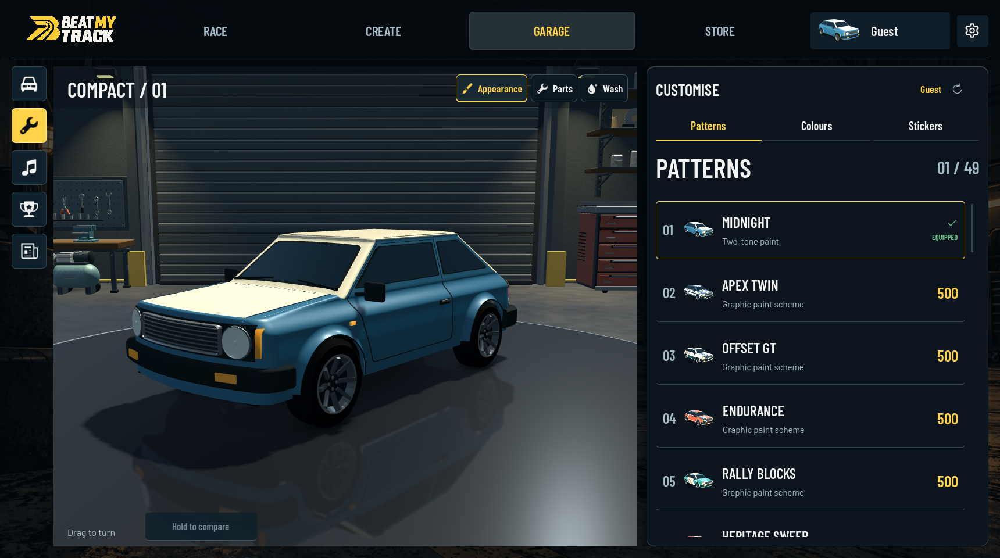
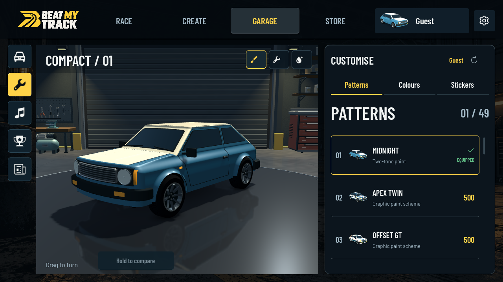

Garage paint camera
The paint view uses a raised three-quarter camera to fill more of the available height. The whole vehicle remains visible. Repeated paint selection keeps the camera, and leaving editing restores the preceding Garage view.
Change and validation · Measurements and commands · Scoped checkpoint
Actual App — 1720 × 960
Before — Compatibility
After
Actual App — 1280 × 720
Before — Compatibility
After
Short landscape — 960 × 540

All seven vehicles

Isolated Windows native tests with synthetic mouse/touch. No physical-device test, purchase or owner-process restart.